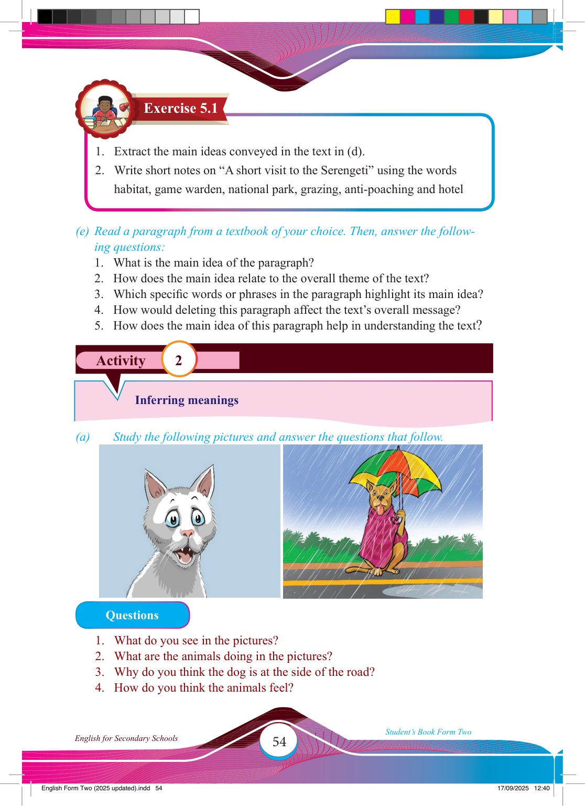

54
Student’s Book Form Two
English for Secondary Schools
Activity 2
Exercise 5.1
1. Extract the main ideas conveyed in the text in (d).
2. Write short notes on “A short visit to the Serengeti” using the words habitat, game warden, national park, grazing, anti-poaching and hotel
(e) Read a paragraph from a textbook of your choice. Then, answer the follow- ing questions:
1. What is the main idea of the paragraph?
2. How does the main idea relate to the overall theme of the text?
3. Which specifi c words or phrases in the paragraph highlight its main idea?
4. How would deleting this paragraph affect the text’s overall message?
5. How does the main idea of this paragraph help in understanding the text?
Inferring meanings
(a)
Study the following pictures and answer the questions that follow.
Questions
1. What do you see in the pictures?
2. What are the animals doing in the pictures?
3. Why do you think the dog is at the side of the road?
4. How do you think the animals feel?
17/09/2025 12:40